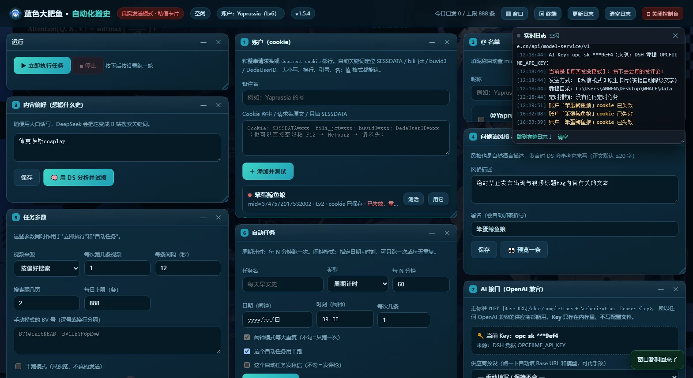
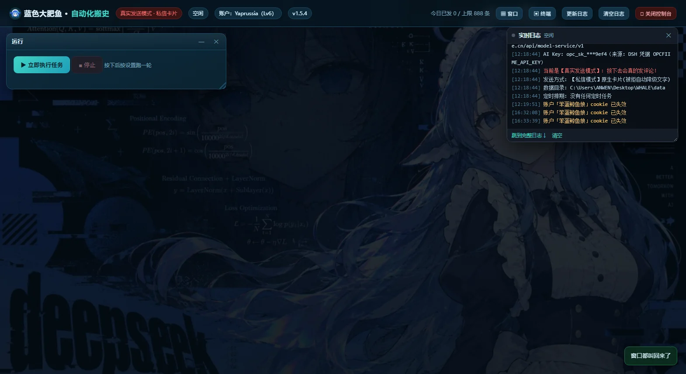
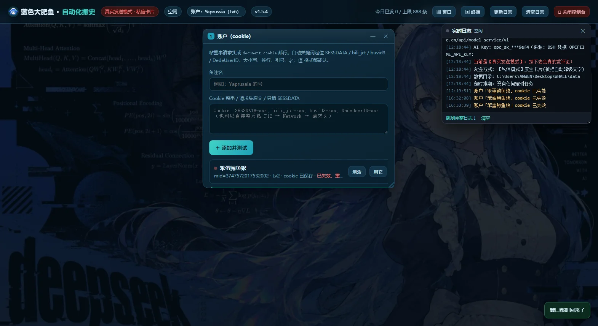
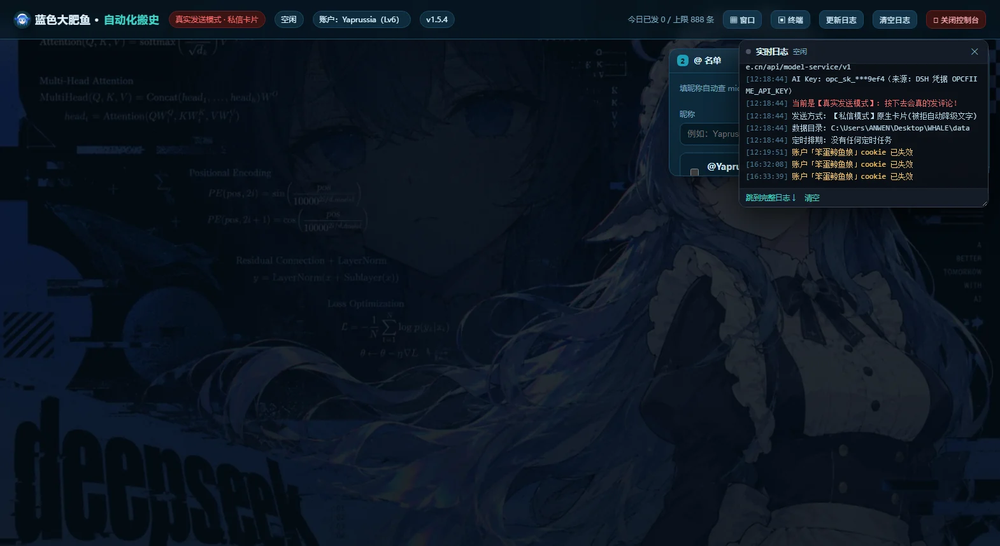
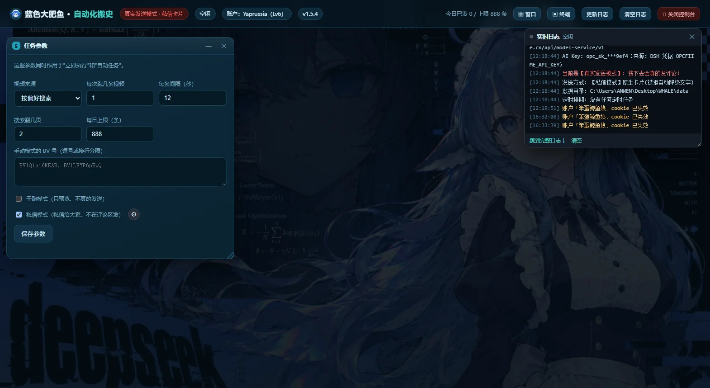
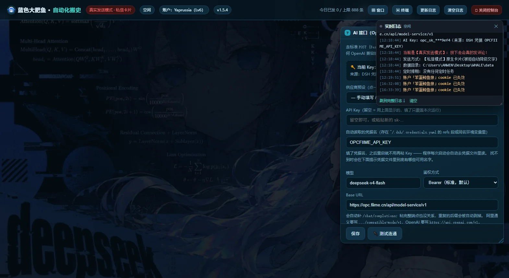
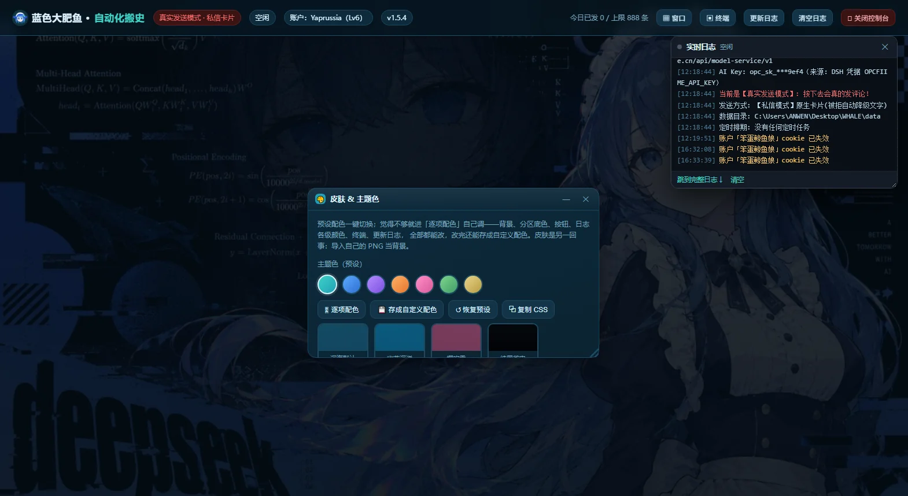
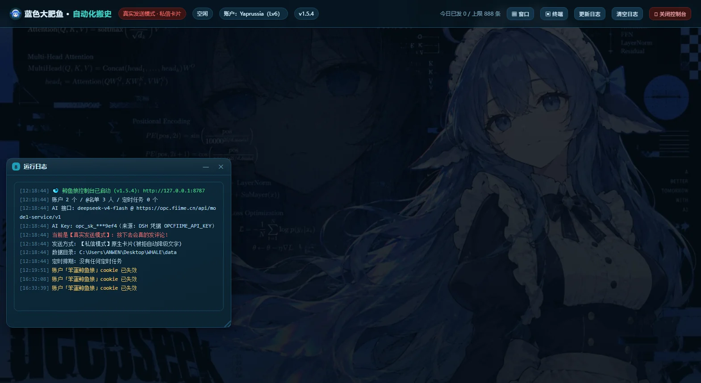

RUN
立即执行
POST /api/task/run按一下就跑一轮完整流水线。跑之前会先验活当前账户，失效就直接中止，一条都不发。
- 轮次
- videosPerRun，默认 3 条
- 间隔
- delaySeconds，默认 12 秒
- 模式
- 真实发送 / 干跑（只生成不发送）
- 通道
- 评论区 / 私信
前置：账户 cookie 有效 · @ 名单非空 · 偏好已分析出关键词
下面每一张都是真跑出来的界面截图，不是示意图。切分区、切配色、跑一遍流水线——都可以点。








六项能力。全部配置经网页完成，写回 config.json，跨设备不丢。
粘贴 cookie 即入档，可存多个号。任务开始前验活，失效直接中止。
账户按 UID 精准定位，不靠昵称撞运气。列表可增删。
名单大白话写喜好，AI 拆成搜索词。词表可手改。
分析翻搜索结果挑新片，AI 写问候。评论与私信两套口吻。
成文手点即跑，或挂定时。调度在服务端，关网页继续跑。
调度干跑只生成不发送。日志分级着色，小窗常驻。
干跑从一句喜好到一条发出的消息。任一步失败即中止，原因写入日志。
偏好文本交给 AI，返回搜索词与风格说明。任何 OpenAI 兼容供应商均可接入。
关键词调 B 站搜索，翻前几页，按 videosPerRun 挑未发过的。默认 3。
评论按风格写；私信转述「刷到了什么」，不表演情绪。上限 40 字，超出截到分句。
评论走 x/v2/reply/add，私信走 web_im/send_msg。结果写入 data/history.jsonl。

四步走完，结果进历史。失败的任何一步都会在日志里留下原因，不会静默吞掉。
十一段窗格，可拖拽 / 可收起 / 可关闭。每段负责什么、跑之前要满足什么，都写在下面。
按一下就跑一轮完整流水线。跑之前会先验活当前账户，失效就直接中止，一条都不发。
粘贴 cookie 即入档，可同时存多个号。失效的会标红，任务不会拿它去发。
要 @ 谁，按 UID 精准定位，不靠昵称撞运气。列表可增删，也会显示解析出的昵称。
用大白话写喜好，交给 AI 拆成搜索词。词表可以手改，改完立即生效。
跑多快、跑多少，全在这。默认值偏保守，改大前先想清楚风控。
挂上就不用管。调度在服务端，关掉网页它照样跑，除非把整个 exe 关掉。
不绑死任何一家。任何 OpenAI 兼容供应商都能接，内置预设，也可手填端点。
从「只有主色副色」到逐项可调：底色、日志每一级、终端、弹窗全都能改，还可导入图片当皮肤。
分级着色，常驻小窗。失败原因一定落在日志里，不会静默吞掉。
每一轮发了什么、发给谁、成功还是失败，逐条落盘，重启不丢。
右上角「▣ 终端」呼出，看服务进程的 stdout/stderr，也能直接敲命令。
无框架，ROUTES 表手写分发。全部仅监听 127.0.0.1。

| 方法 | 路径 | 说明 |
|---|---|---|
| GET | /api/state | 全量状态：账户、名单、配置、版本、运行标志 |
| POST | /api/settings | 保存配置（深合并 + 备份 + 版本迁移） |
| POST | /api/task/run | 立即执行一次任务 |
| GET | /api/schedules | 列出定时任务 |
| POST | /api/schedules | 新增 / 修改定时任务 |
| POST | /api/preview | 干跑：只生成不发送，返回字数与上限 |
| GET | /api/logs?since= | 增量拉日志（序号续传） |
| GET | /api/changelog | 读 CHANGELOG.md，前端渲染 markdown |
| GET | /api/task/history?n= | 任务历史（默认 30，最多 200） |
| POST | /api/task/history/clear | 清空历史（内存 + 磁盘） |
| POST | /api/accounts/test | 测活：验 cookie 是否有效 |
| POST | /api/accounts/health | 批量验活，返回四态健康点 |
| GET | /api/term?since= | 终端输出增量拉取 |
| POST | /api/term/exec | 在服务进程里执行一条命令 |
| POST | /api/term/kill | 终止正在跑的命令（taskkill /t /f） |
| POST | /api/term/clear | 清空终端缓冲区 |
| GET | /api/theme | 读当前配色（8 组 50 项） |
| POST | /api/theme | 保存配色到 config.json |
| POST | /api/skin/upload | 上传皮肤图片 |
| POST | /api/shutdown | 关闭服务 |
| POST | /api/logs/clear | 清空日志 |
放慢节奏、前置拦截，而非绕过限制。
任务开始前验活当前账户，失效直接中止，一条不发。
默认间隔 12 秒，每日 10 条封顶。计数按账户独立统计。
名单含当前账户本人即跳过，且在按次数切片之前，不占名额。
网页端仅放开 msg_type 1/2/5，分享卡片（7）恒返回 -400。先试卡片，失败降级为「文本 + 链接」。
仅存于本地 data/config.json，不外传、不入日志、不入 git。
全量改动见 CHANGELOG.md，控制台右上角可查。
主题色从「只有主色和副色」变成 8 组、50 项逐项编辑：底色、日志每一级的颜色、终端、更新日志弹窗全都可调。派生半透明色由主色现算，不再出现换了橙色还留着青色焦点圈的事。配色同时写进 config.json，换浏览器不丢。
后端从两千行单文件拆成七个模块，前端拆成七个片段但构建时仍拼回单个 app.js；配置加了版本号与迁移链；任务历史落盘到 data/history.jsonl，重启不丢；一套命令跑完全部测试。
窗口排布无视视口高度，把 AI 接口窗连同保存按钮推到页面 1500px 以外。修法是操作按钮吸在窗口底边，排布按视口走，窗口菜单还多了「排回屏幕」。
以前模型看到标题就开始演——「你也太懂我了吧」。改成转述「我今天刷到了什么」，提示词给正反例；同时加了正文字数上限（默认 40 字，截到分句）。
九个分区全部变成可拖动 / 可收起 / 可关闭的小窗，顶栏多了「▦ 窗口」菜单和「▣ 终端」，7 套主题色，标题改成「蓝色大肥鱼 · 自动化搬史」。
勾选即改为发私信而不发评论，内容由文案 + 署名构成；⚙ 面板选「原生卡片 / 文本 + 链接」；自动任务也支持私信。
任何 OpenAI 兼容供应商都能接：供应商预设、三种鉴权 + 免鉴权、完整端点覆盖、额外请求头。修掉 response_format 不兼容、Base URL 拼错、429/5xx 不重试、```json 围栏解析失败等五个坑。
启动自动开浏览器、把 PE 子系统改成 GUI 干掉黑窗口、网页一键关闭、重复双击不打架、启动失败给可视化错误页。
独立 exe 打包、皮肤更换（含图片导入）、cookie 解析升级为请求头关键词精准定位，并修掉一个会让配置「整个消失」的深合并崩溃。
账户 / 名单 / 偏好 / 风格 / 署名 / 立即执行 / 自动任务 / 干跑 / 日志 / 历史，一次到位。